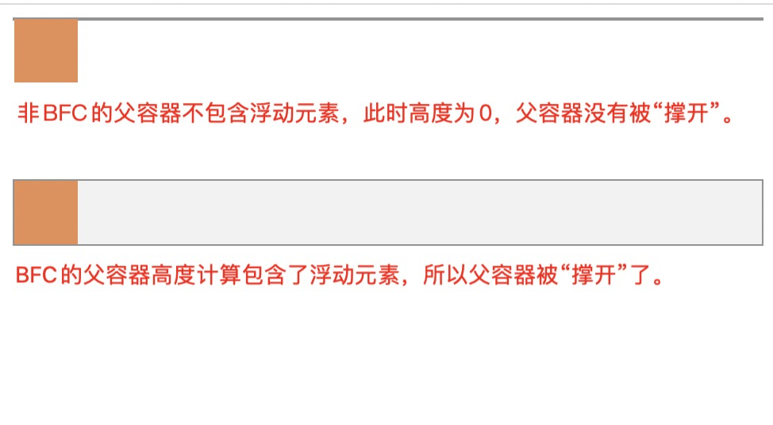
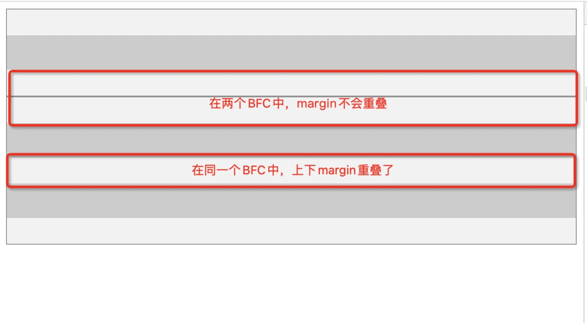
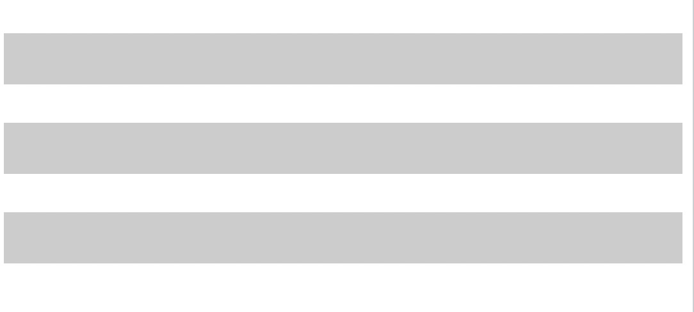
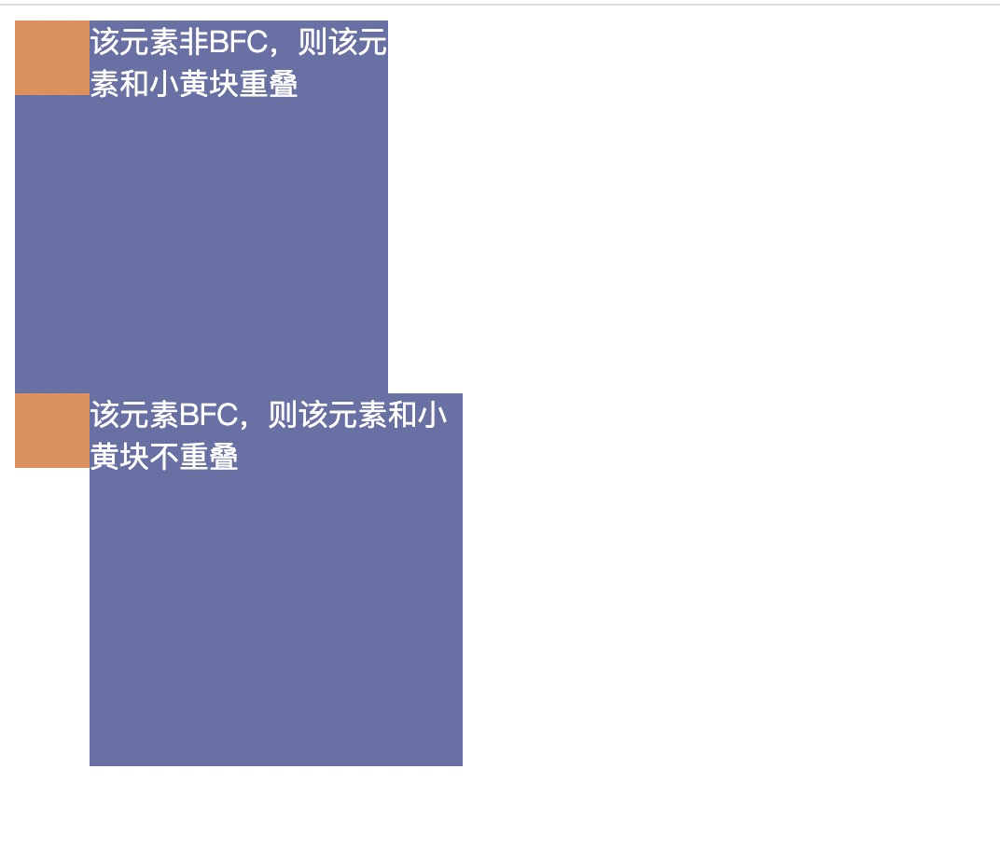
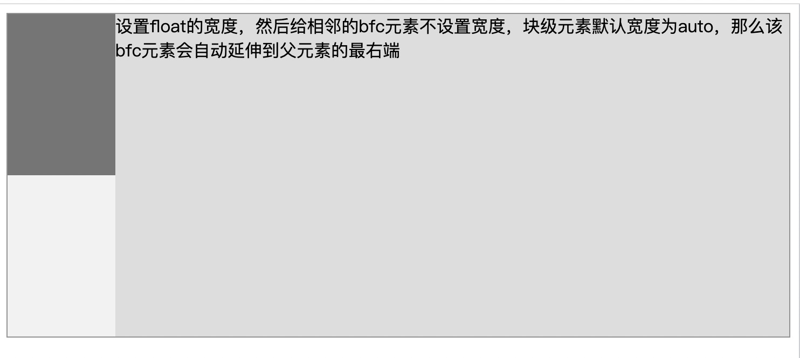

BFC
什么是BFC？
在了解BFC之前，先了解一下FC的定义。FC（Formatting Context 格式化上下文），FC指定了页面中一块独立区域的渲染规则，这个渲染规则可以理解为内部元素的布局规则。不同的FC有不同的规则定义。
目前网页中几种FC的分类：
- IFC（Inline Formatting Context）：行级格式化上下文
- BFC（Block Formatting Context）：块格式化上下文
- 更多关于IFC / BFC的定义参考：CSS 2.1 Visual formatting model：Section 9.4
- FFC（Flex Formatting Context）：自适应格式化上下文
- 更多关于自适应布局的定义参考 ：Flexible Box Layout Module Level 1
- GFC（Grid Formatting Context）：网格布局格式化上下文
BFC的触发条件
在以下几种情况下，会触发形成BFC：
- 根元素
HTML - 浮动元素：
float属性不为none position定位：设置为absolute、fixedoverflow属性：设置为非visible、clip的块元素display属性：- 设置为
table类型：table：对应<table>table-caption：HTML 表格标题默认值table-row：对应<tr>table-row-group：<tbody>table-header-group：<thead>table-footer-group：<tfoot>table-cell：HTML 表格单元格默认值inline-table
- 设置为
inline-block - 设置为
flow-root - 设置为
flex类型：父元素display属性为flex或者inline-flex，其子元素内部的布局规则为BFC（其子元素本身非table类型、grid类型、flex类型） - 设置为
grid类型：父元素display属性为gird或者inline-grid，其子元素内部的布局规则为BFC（其子元素本身非table类型、grid类型、flex类型）
- 设置为
contain属性：layoutcontentpaint
- 多列容器（暂时没有搞懂）
BFC渲染规则
- 渲染隔离：一个BFC是页面上的一个隔离的独立容器，容器里面的子元素的排版布局不会直接影响到外面的元素（可能通过子元素影响父元素容器大小间接影响外部元素布局）。
- 容器大小计算：区域大小由内部元素的边界确定：
- 即一个BFC容器会包裹所有的子元素块，无论该子元素是否是浮动元素，所以BFC的高度计算会包含
float元素。
- 即一个BFC容器会包裹所有的子元素块，无论该子元素是否是浮动元素，所以BFC的高度计算会包含
margin重叠：- 在同一个BFC中，相邻元素形成的
box的上下margin产生重叠； - 但在不同的BFC中，各自的子元素的
margin不重叠。
- 在同一个BFC中，相邻元素形成的
- 排布方向：
- 内部的子元素由上到下依次排布。
- 内部子元素根据书写方向（
writing-mode）确定从左开始排布还是从右开始排布。 - 起始位置的子元素的
margin紧贴父容器的border（只有起始方向的margin紧贴）。
- 当前的BFC不与外部的
float box重叠。
实例验证
1、容器大小计算
区域大小由内部元素的边界确定，高度计算包含float元素
当不给父容器设置高度的情况下，查看父容器的高度是如何计算的：
1 | |

2、margin重叠
同一个BFC中相邻的元素上下margin重叠
当给子元素设置
1 | |

相反，当父容器非BFC时，所有子元素（无论是否是平级）都会发生上下margin重叠。
将上面父容器的display属性改为contents ：
1 | |

contents
These elements don’t produce a specific box by themselves. They are replaced by their pseudo-box and their child boxes.当设置元素为content时，该元素不会生成自己的box，而是会被子元素生成的box取代。
会发现此时处于两个父级下的子元素，上下margin也会发生重叠。此时因为父容器不是BFC，没有渲染隔离，所有子元素生成的盒子被平铺到了最外层。
3、当前的BFC不与外部的float box重叠
1 | |

BFC的作用
利用BFC的渲染规则，可以实现以下几个功能：
- 自适应两栏布局
- 阻止元素被浮动元素覆盖
- 清除内部浮动
- 阻止
margin重叠：分属于不同的BFC时不发生重叠
后面三条在实验中以及实现过了，但是针对第一条，如何利用BFC实现两栏布局呢？
利用2个特性：
- 块级元素
width:auto时，会自动拉伸至父元素左右边界处（横向占满）。 - BFC渲染规则：当前的BFC不与外部的
float box重叠。
1 | |

参考
BFC
https://kkkkira.github.io/2023/02/28/BFC/